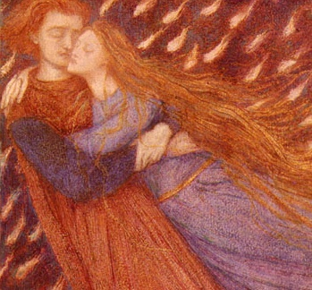

Sacred Texts Sub Rosa
Buy this Book at Amazon.com
|

Dante Gabriel Rossetti, Paolo and Francesca Da Rimini (Detail) [1855] (public domain image) |
Brother of the Third Degreeby Will L. Garver[1894] |
Set in the near future (early twentieth century), this 1894 occult novel is a tale of eternal love, albeit chaste. The protagonist, Alphonso Colono, a Mexican, is born into a family with connected with the Illuminati, here called the 'White Brotherhood.' He moves to Paris and is initiated into the occult group, where he meets the woman who is to become his soulmate: Iole. They meet St. Germain and other adepts, help a modern Napoleon unite Europe, and eventually pass beyond the mortal realm.
This novel may not have had the impact of Zanoni, which it bears superficial resemblances to. It does show that the modern complex of beliefs about the Illuminati was complete in all of its aspects in the last decade of the 19th century. The wandering eternal masters, the use of occult power to leverage political change, and the strange powers of the adepts, are present and accounted for. These concepts would later become dogma for groups such as the "I AM" Activity and its modern successors.
Garver's vision of a united Europe at peace in the 20th century, (after a period of war) was a good prediction, even if the mechanism he proposes is a bit absurd. The narrative itself is still a good read, despite the overblown period prose. This long-forgotten predecessor to the Da Vinci Code moves along nicely and has memorable characters. Not many 19th century occult fictions are half as readable.